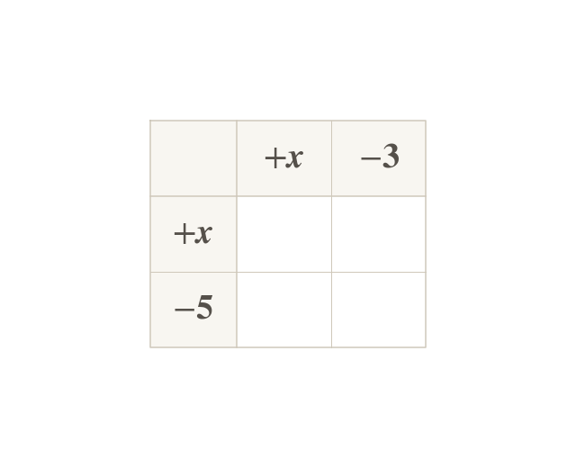

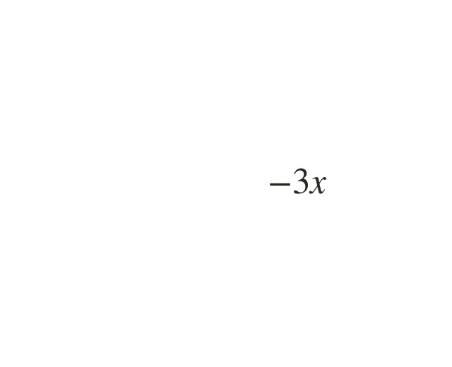
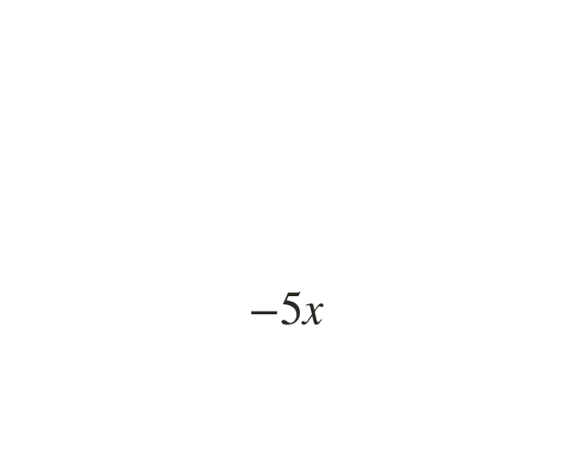
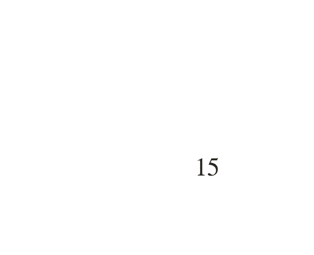
Every term by every term
Each term in one bracket multiplies each term in the other. Here gives four products:
Expanding two brackets you can already do; the reason to be disciplined about the layout is that today it grows to a cubic times a quadratic, and that same column layout is what keeps the binomial expansion in readable instead of a sprawl of terms.
Work down the page at your own pace. Write every answer in your book first, then click to check it.
Read each card, then follow the worked examples one step at a time.




Each term in one bracket multiplies each term in the other. Here gives four products:
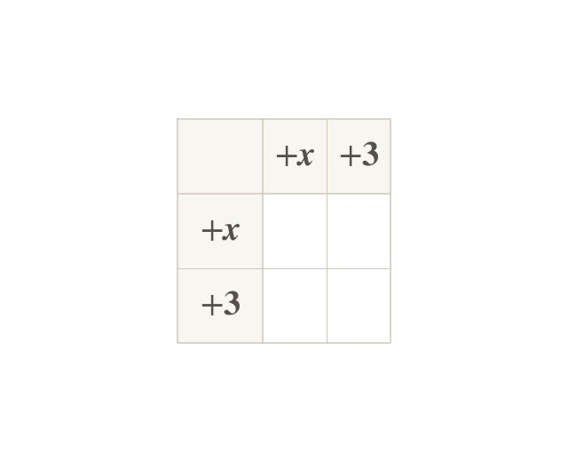

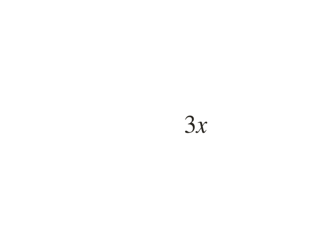

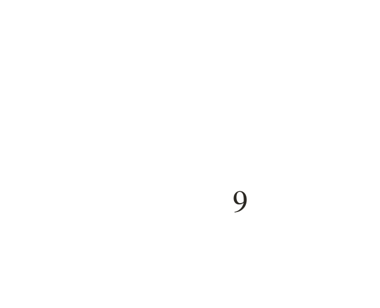
A squared bracket is the bracket times itself. So not
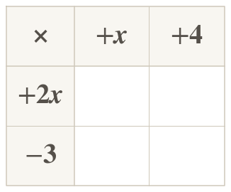
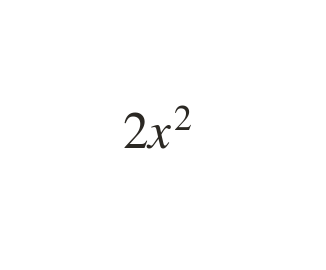
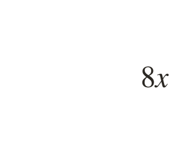
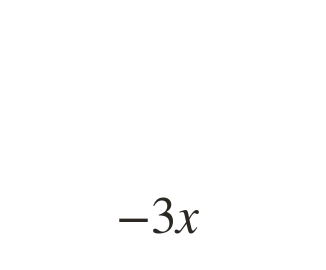
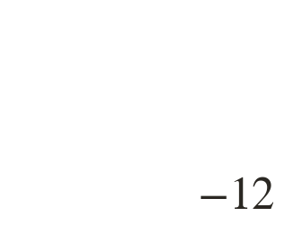
Pick an answer. If it's wrong, the feedback tells you which mistake it was.
Section Expanding brackets : the pairs of brackets and the squared brackets.
Read each card, then follow the worked examples one step at a time.
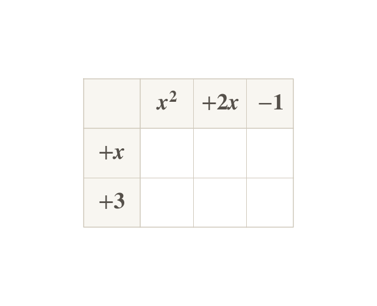
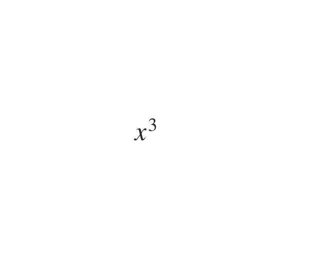
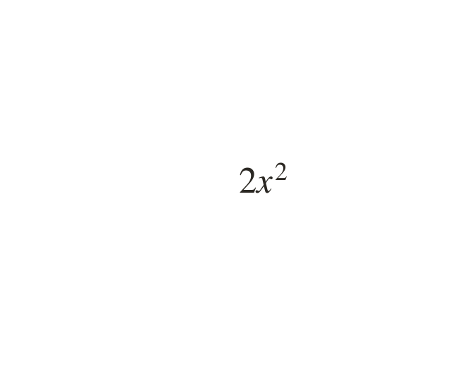
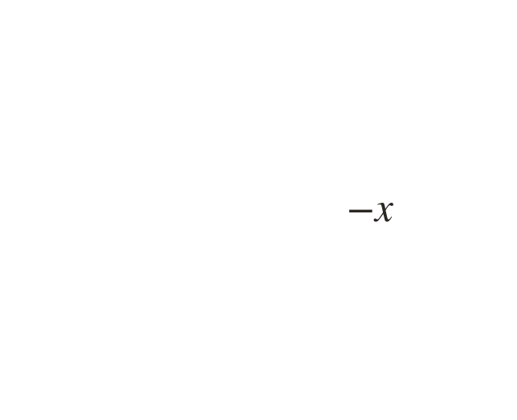
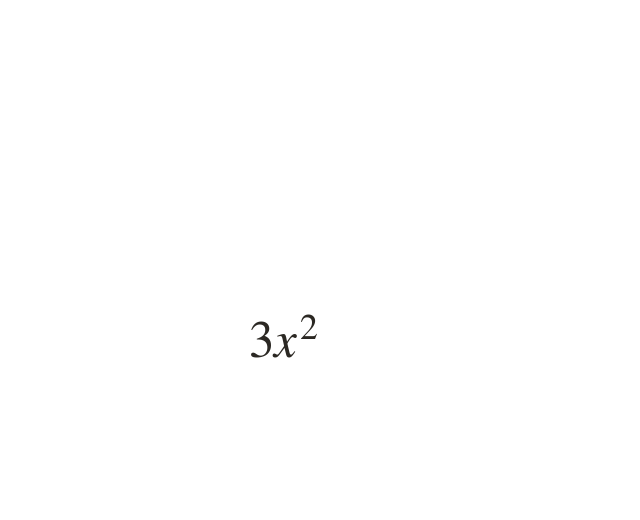
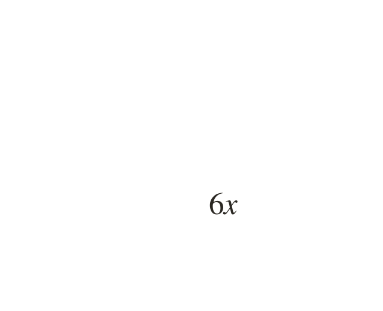
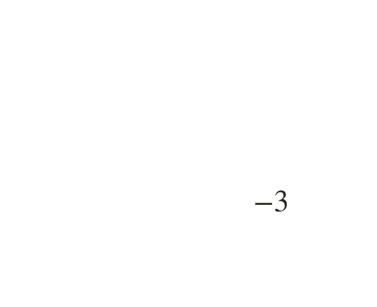
Every term still multiplies every term, however long the brackets. A grid shows as six products.
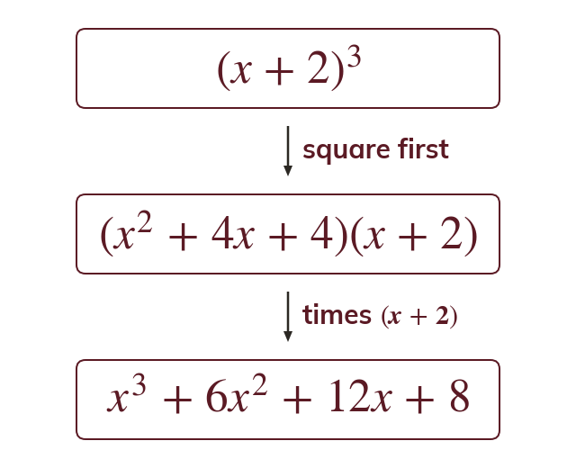
A cubed bracket is squared first. The square is then multiplied by the bracket once more.
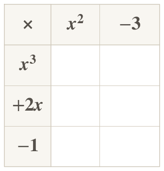
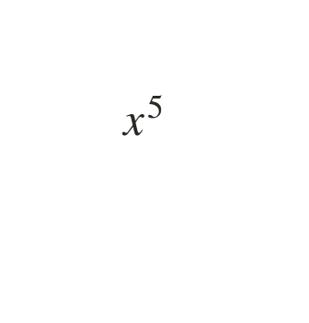
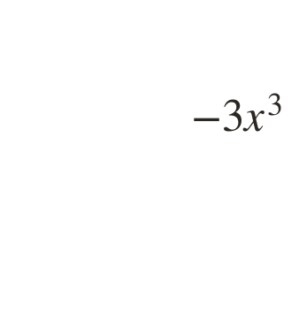
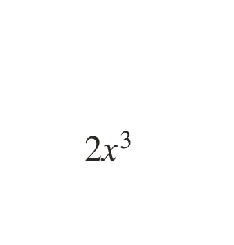
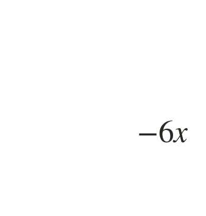
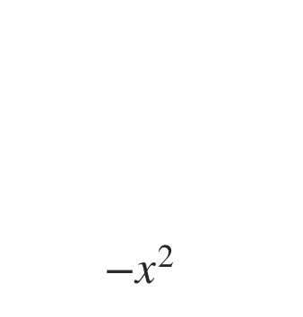
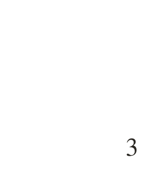
Pick an answer. If it's wrong, the feedback tells you which mistake it was.
Section Expanding brackets : the higher-degree products, the cubed brackets, and the cuboid and prism problems with algebraic sides.
Finished? Next lesson: 1.6 The Binomial Expansion.
For each skill, tap the one that is true for you today. Your Revise pages start with anything you mark Not yet.
Your ratings are saved on this device only.
Log in, then search for a code to practise that skill.